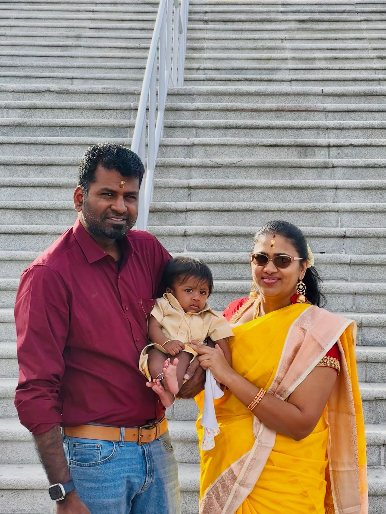
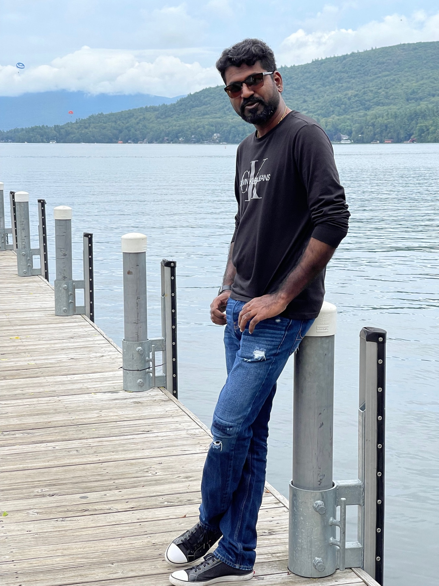
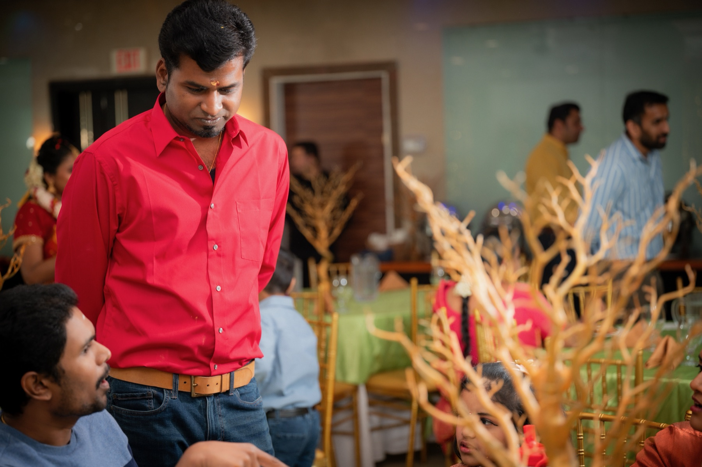
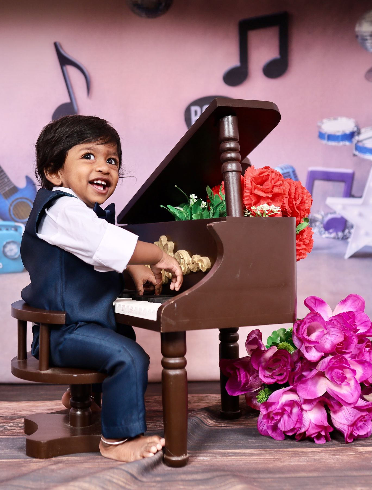

Dad first.Curious always.
Born and brought up in Madurai, at home in New Jersey. Outside work it’s my son, a camera roll full of real moments, and the morning markets.
Start with my son Portrait of Ponmudi Pandiyan in a red shirt, over a collage of the cities he has lived in.
Time with my son.
He is the best part of any day. Park walks, piano keys and a lot of laughing — everything else can wait.
Monisha, my wife, has been my steadiest supporter through every late-night review, every launch and every pivot.
Stepping away from a system design and just being present at home recalibrates everything. Technology is a means, not an end.



Real moments, kept.
I take a lot of photos — unposed, everyday life — and share the ones I love on Instagram. Not a photographer, just someone who likes keeping the moment.




A few favourites · the rest live on Instagram
Reading the world, every morning.
The markets
Mornings usually start with stocks, earnings and the news behind the numbers. I like understanding why things move, not just that they did.
What’s next in tech
Keeping up with what is happening across the industry — AI, devices and networks — and how it changes what we build.
Where I’ve called home.
- 1990sMaduraiமதுரைBorn and brought up, school through the 90s
- 2002 – 2006Coimbatoreகோயம்புத்தூர்College, friends and fun days
- 2006 – 2010Chennaiசென்னைFirst job — still my first stop in India
- 2010 – 2013New YorkConcerts, artists and long city walks
- 2013 – 2014BurbankStudios, artists and live music
- 2014 – todayNew JerseyHome, family and everything I love
Chennai → New York, November 2010